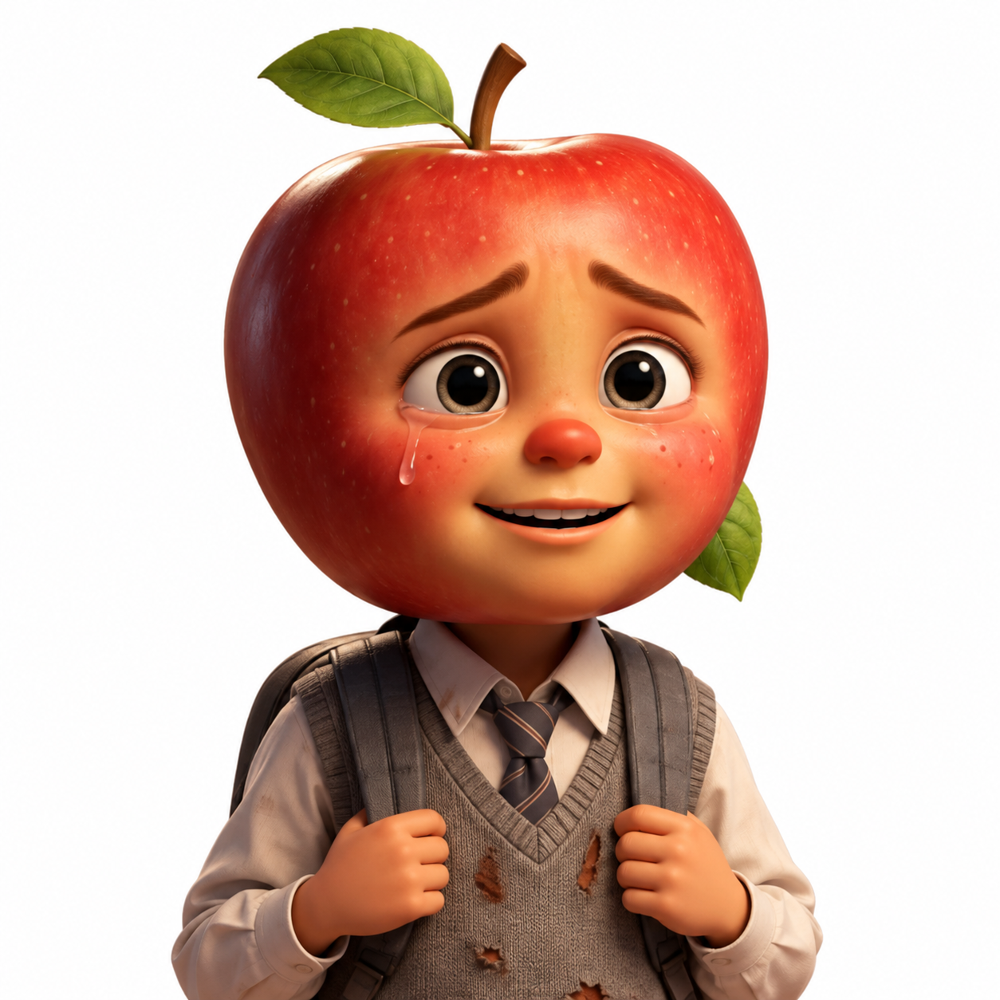

Manzana
Hijo de Pera, preocupado por la economía de su familia.
SOCIEDAD Y COMUNIDAD
Manzana busca ayudar a su familia. Una promesa de dinero fácil lo enfrenta a una decisión que puede cambiar su futuro.
UNA FRUTINOVELA DE THE NEBULA SOCIETY
Ver episodio ↓ EP. 001 / PANDILLAJE
EP. 001 / PANDILLAJE01 / LA HISTORIA
SINOPSIS
Manzana vive con su madre, Pera, en una situación económica difícil. Preocupado por las deudas familiares, acepta una propuesta de Piña para conseguir dinero fácil. Sin embargo, descubre que esto implica realizar actividades incorrectas y decide alejarse de ese camino. Finalmente, continúa sus estudios, se gradúa y demuestra que existen alternativas para construir un futuro diferente.
PRODUCIDA POR THE NEBULA SOCIETY
FORMATO VERTICAL / 9:16
Sin reproducción automática
Transcripción facilitada por el equipo, en orden. No contiene marcas de tiempo ni sustituye a los subtítulos sincronizados.
CHANGE LAB / EP. 001
No se pudo cargar la frutinovela.
Comprueba tu conexión e intenta cargar la página de nuevo.
Abrir el video directamenteUna historia de ficción sobre pandillaje.
Subtítulos sincronizados pendientes. Puedes leer los diálogos junto al video.
Leer la transcripción de la frutinovela02 / PERSONAJES DE LA HISTORIA

Hijo de Pera, preocupado por la economía de su familia.
Madre de Manzana, que se esfuerza por cubrir los gastos del hogar.
Ofrece a Manzana la posibilidad de obtener dinero fácil.
Le indica a Manzana que deberá realizar actividades incorrectas para conseguir dinero.
03 / DETRÁS DE LA HISTORIA
Se refiere a la participación de jóvenes en grupos que realizan actividades violentas o delictivas. Pertenecer a un grupo de amigos no significa formar parte de una pandilla. Comprender estas situaciones requiere escuchar y evitar estigmatizar a la juventud.
La presión para ser aceptado, la violencia del entorno y las dificultades económicas pueden aumentar los riesgos cuando faltan apoyos. La pobreza no determina las decisiones de una persona ni es una causa inevitable de delincuencia.
Continuar los estudios, recibir orientación y contar con personas de confianza puede abrir oportunidades. La familia, la escuela y los espacios comunitarios pueden acompañar a quienes atraviesan dificultades.
Ante una propuesta que implique hacer daño o asumir riesgos, es posible poner límites y pedir ayuda. Buscar orientación educativa, oportunidades comunitarias y apoyo ante dificultades económicas permite explorar otros caminos.
04 / REFLEXIONA
Elige una opción y comprueba tu respuesta. Puedes cambiarla y volver a intentarlo.
Esta actividad invita a reflexionar; no mide tu conciencia social. Tus respuestas no se guardan.
Para responder y recibir retroalimentación, abre esta página con JavaScript habilitado. También puedes reflexionar sobre estas preguntas:
05 / ACTÚA
Buscar orientación de adultos de confianza.
Participar en actividades educativas y comunitarias.
Reconocer la presión de grupo y establecer límites.
Buscar apoyo ante dificultades económicas o situaciones de riesgo.
06 / SIGUE EXPLORANDO
EP. 002 / FAST FASHION
Detrás de la etiqueta
Explorar Fast Fashion ↗EP. 003 / CIBERACOSO
Detrás de cada pantalla
Explorar Ciberacoso ↗